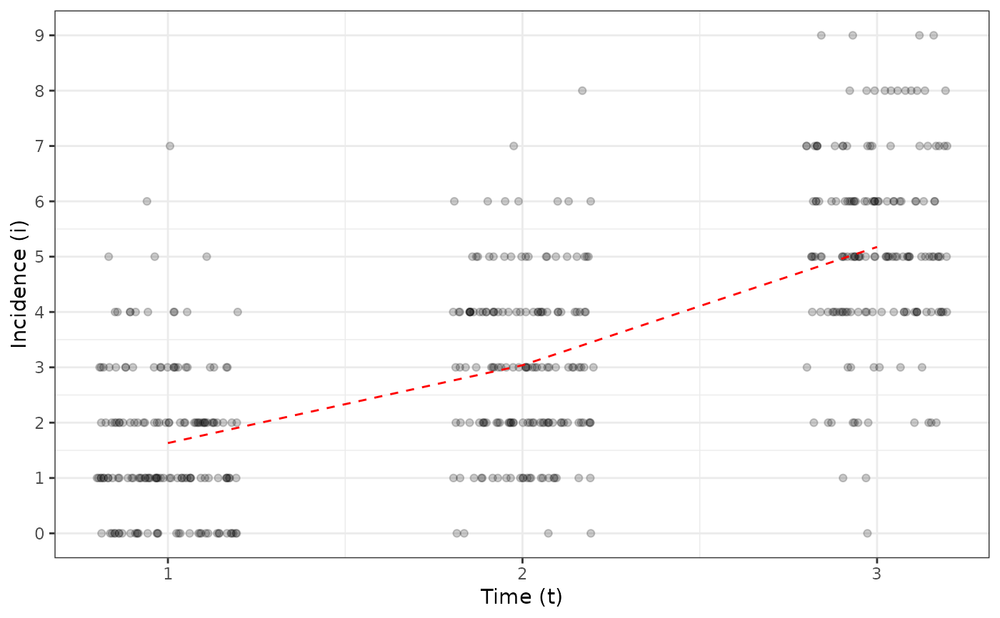
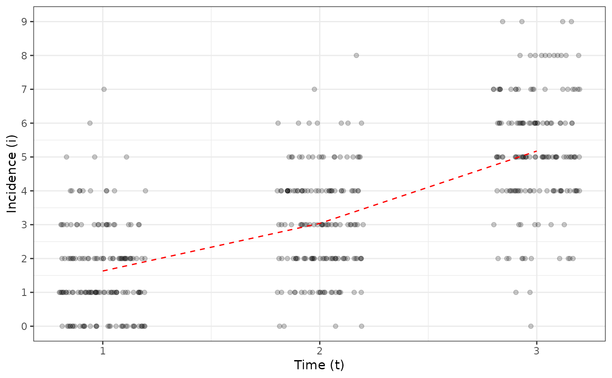

This function provides a easy way to regroup recorded data into groups of same number of individuals.
clump(object, ...)
# S3 method for intensity
clump(object, unit_size, fun = sum, inclusive_unspecified = FALSE, ...)Arguments
- object
An
intensityobject.- ...
Additional arguments to be passed to
fun.- unit_size
Size of a group unit. It must be a named vector, with names corresponding to non-observational variables (i.e. space and time variables). If the size of a variable in the data set is not a multiple of the provided value in
unit_size, some sampling units (the last ones) will be dropped so that clumps of individuals remain even throughout the data set.- fun
Function used to group observational data together.
- inclusive_unspecified
Not yet implemented. Do unspecified mapped variables (different from i and n) need to be included into the bigger possible sampling unit (TRUE) or splited into as many sampling units as possible (FALSE, default)?
Examples
my_incidence <- incidence(tomato_tswv$field_1929)
plot(my_incidence, type = "all")
#> Warning: The `fun.y` argument of `stat_summary()` is deprecated as of ggplot2 3.3.0.
#> ℹ Please use the `fun` argument instead.
#> ℹ The deprecated feature was likely used in the epiphy package.
#> Please report the issue at <https://github.com/chgigot/epiphy/issues>.
#> Warning: Computation failed in `stat_summary()`
#> Caused by error in `get()`:
#> ! object 'mean_sdl' of mode 'function' was not found

 # Different spatial size units:
my_incidence_clumped_1 <- clump(my_incidence, unit_size = c(x = 3, y = 3))
plot(my_incidence_clumped_1, type = "all")
#> Warning: Computation failed in `stat_summary()`
#> Caused by error in `get()`:
#> ! object 'mean_sdl' of mode 'function' was not found

my_incidence_clumped_2 <- clump(my_incidence, unit_size = c(x = 4, y = 5))
plot(my_incidence_clumped_2, type = "all")
#> Warning: Computation failed in `stat_summary()`
#> Caused by error in `get()`:
#> ! object 'mean_sdl' of mode 'function' was not found
# Different spatial size units:
my_incidence_clumped_1 <- clump(my_incidence, unit_size = c(x = 3, y = 3))
plot(my_incidence_clumped_1, type = "all")
#> Warning: Computation failed in `stat_summary()`
#> Caused by error in `get()`:
#> ! object 'mean_sdl' of mode 'function' was not found

my_incidence_clumped_2 <- clump(my_incidence, unit_size = c(x = 4, y = 5))
plot(my_incidence_clumped_2, type = "all")
#> Warning: Computation failed in `stat_summary()`
#> Caused by error in `get()`:
#> ! object 'mean_sdl' of mode 'function' was not found
 # To get mean disease incidence for each plant over the 3 scoring dates:
my_incidence_clumped_3 <- clump(my_incidence, unit_size = c(t = 3), fun = mean)
plot(my_incidence_clumped_3)
# To get mean disease incidence for each plant over the 3 scoring dates:
my_incidence_clumped_3 <- clump(my_incidence, unit_size = c(t = 3), fun = mean)
plot(my_incidence_clumped_3)